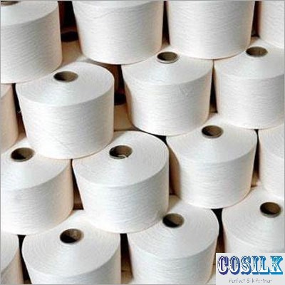

Products :
Product details:
Combed cotton single yarn:

| Yarn type | 100% combed cotton yarn |
| Colour | Grey |
| Purpose | Weaving |
| Counts | 60s, 68s ,75s ,90s ,100s ,113s |
| CSP | 80 Lea |
| Packing type | 1 kg cone, 50 cones per bag |
All our yarns are made from first grade DCH cotton to provide the best quality yarn to suit for both domestic and international markets. Our yarns can be used for various process like gassing, mercersing, dyeing, weaving, etc.
Properties :
- 100% natural premium cotton fibre.
- Well water absorbent.
- Suitable for perfect shade matching in dyeing.
- Long durability.
Combed cotton doubled yarn:
| Yarn type | 100% combed doubled cotton yarn |
| Colour | Grey |
| Purpose | Weaving |
| Counts | 2/60s,2/68s ,2/75s ,2/90s ,2/100s ,2/113s |
| CSP | 80 Lea |
| Packing type | 1 kg cone, 50 cones per bag |
Our premium quality combed cotton single yarn is twisted and doubled to maintain the specifications and standards. Our yarns are best prefered by leading weavers.
Properties :
- 100% natural premium cotton fibre.
- Well water absorbent.
- Suitable for perfect shade matching in dyeing.
- Long durability.
- Gassed mercerised cotton yarn
| Yarn type | 100% gassed mercerised combed cotton yarn |
| Colour | Grey |
| Purpose | As an substitute for silk yarn in weaving silk sarries |
| Counts | 2/64s ,2/74s ,2/80s ,2/100s ,2/110s ,2/120s |
| CSP | 80 Lea |
| Packing type | Bundles of 4.54 kgs , 40 bundels per bale |
Our doubled yarns are processed in automised gassing unit to ensure cent percent uniformity and then it is subjected to merceriastion in imported machines to get the very best Gased mercerised combed cotton yarn.
Properties :
- 100% natural premium cotton fibre.
- Well water absorbent.
- Suitable for perfect shade matching in dyeing.
- Long durability.
- Best substitute for silk yarn.
Brand owned by :